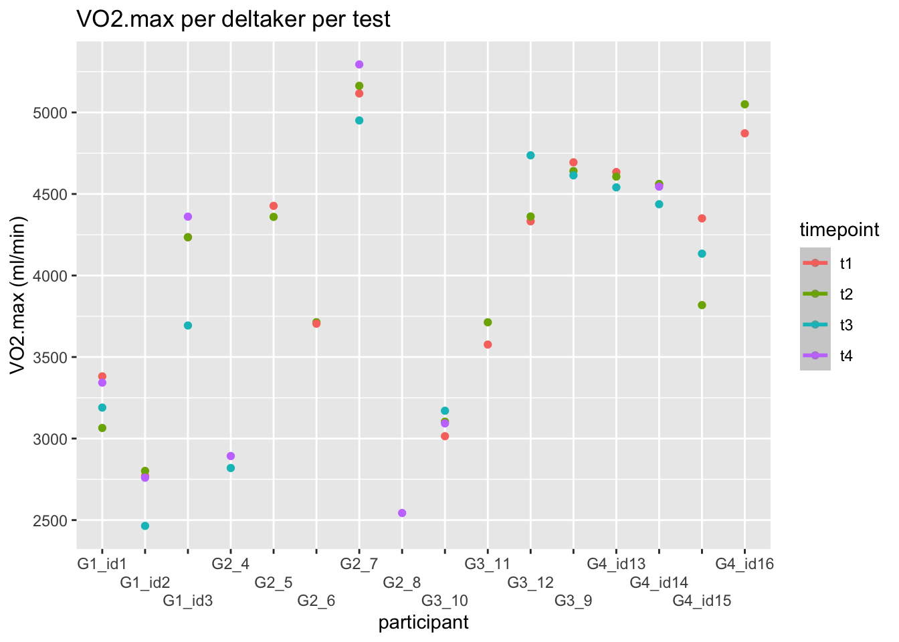

1 Assignment 1: Reliability and tools for reproducible data science
The purpose of this assignment is to present estimates of reliability of measures collected in the physiology lab at Inland Norway University of Applied Sciences. The data is gathered from multiple VO2max tests, where 16 participants performed two till four tests in the time span of 3 weeks. The first two tests were performed within 24 hours of each other during the first week. The last two tests were performed within 48 hours of each other during the third week. We have used Rstudio to analyze the data and to estimate if the performed tests were reliable.
1.1 Method
1.1.1 Standardization pre-test
Same workout regime two days before test day.
Food intake and hydration + caffeine - last two meals should be the same
sleep - same sleeping schedule
same test time for each test
1.1.2 Protocol
1.2 Results
1.2.1 Figur 1
Figur 1 viser det absolutte maksimale oksygenopptaket til hver enkelt deltaker, sammenlignet med alle testene som ble gjennomført til alle deltakerne.
1.2.2 Tabell 1
| id | t1 | t2 | t3 | t4 |
|---|---|---|---|---|
| G1_id1 | 3381.5 | 3065.0 | 3190.0 | 3343.0 |
| G1_id2 | 2771.0 | 2801.5 | 2464.5 | 2760.0 |
| G1_id3 | 4234.5 | 4235.0 | 3693.5 | 4361.0 |
| G2_4 | NA | NA | 2819.5 | 2893.0 |
| G2_5 | 4427.0 | 4359.5 | NA | NA |
| G2_6 | 3704.5 | 3713.5 | NA | NA |
| G2_7 | 5116.5 | 5163.5 | 4951.0 | 5294.5 |
| G2_8 | NA | NA | NA | 2543.5 |
| G3_9 | 4694.0 | 4640.5 | 4614.0 | NA |
| G3_10 | 3014.5 | 3103.5 | 3170.5 | 3093.0 |
| G3_11 | 3576.5 | 3713.0 | NA | NA |
| G3_12 | 4332.5 | 4362.0 | 4737.0 | NA |
| G4_id13 | 4634.5 | 4606.5 | 4540.5 | NA |
| G4_id14 | 4556.5 | 4561.5 | 4437.0 | 4545.0 |
| G4_id15 | 4350.5 | 3818.5 | 4134.0 | NA |
| G4_id16 | 4872.0 | 5050.0 | NA | NA |
Tabell 1 viser det samme som “Figur 1”, men her kan man lettere se hvor mange tester hver enkelt deltaker har gjennomført og hvilket resultat som hører til hvilken test.
1.2.3 Tabellen eg skal bruke
library(dplyr)
library(tidyr)
library(gt)
# Reshape data and calculate differences between timepoints
dat_wide <- dat %>%
select(id, timepoint, vo2.max) %>%
pivot_wider(names_from = timepoint, values_from = vo2.max) %>%
mutate(Diff_T2_T1 = `t2` - `t1`,
Diff_T4_T3 = `t4` - `t3`)
# Create summary table with n for each timepoint
n_summary <- dat %>%
group_by(timepoint) %>%
summarise(n = n())
# Generate table with gt
dat_wide %>%
gt() %>%
tab_header(
title = "VO2max per Participant per Timepoint"
) %>%
cols_label(
id = "Participant ID",
`t1` = "Test 1",
`t2` = "Test 2",
`t3` = "Test 3",
`t4` = "Test 4",
Diff_T2_T1 = "Difference (T2 - T1)",
Diff_T4_T3 = "Difference (T4 - T3)"
) %>%
fmt_number(
columns = everything(),
decimals = 2
) %>%
tab_footnote(
footnote = paste("Sample sizes: t1 = ", n_summary$n[1],
", t2 = ", n_summary$n[2],
", t3 = ", n_summary$n[3],
", t4 = ", n_summary$n[4])
)| VO2max per Participant per Timepoint | ||||||
|---|---|---|---|---|---|---|
| Participant ID | Test 1 | Test 2 | Test 3 | Test 4 | Difference (T2 - T1) | Difference (T4 - T3) |
| G1_id1 | 3,381.50 | 3,065.00 | 3,190.00 | 3,343.00 | −316.50 | 153.00 |
| G1_id2 | 2,771.00 | 2,801.50 | 2,464.50 | 2,760.00 | 30.50 | 295.50 |
| G1_id3 | 4,234.50 | 4,235.00 | 3,693.50 | 4,361.00 | 0.50 | 667.50 |
| G2_4 | NA | NA | 2,819.50 | 2,893.00 | NA | 73.50 |
| G2_5 | 4,427.00 | 4,359.50 | NA | NA | −67.50 | NA |
| G2_6 | 3,704.50 | 3,713.50 | NA | NA | 9.00 | NA |
| G2_7 | 5,116.50 | 5,163.50 | 4,951.00 | 5,294.50 | 47.00 | 343.50 |
| G2_8 | NA | NA | NA | 2,543.50 | NA | NA |
| G3_9 | 4,694.00 | 4,640.50 | 4,614.00 | NA | −53.50 | NA |
| G3_10 | 3,014.50 | 3,103.50 | 3,170.50 | 3,093.00 | 89.00 | −77.50 |
| G3_11 | 3,576.50 | 3,713.00 | NA | NA | 136.50 | NA |
| G3_12 | 4,332.50 | 4,362.00 | 4,737.00 | NA | 29.50 | NA |
| G4_id13 | 4,634.50 | 4,606.50 | 4,540.50 | NA | −28.00 | NA |
| G4_id14 | 4,556.50 | 4,561.50 | 4,437.00 | 4,545.00 | 5.00 | 108.00 |
| G4_id15 | 4,350.50 | 3,818.50 | 4,134.00 | NA | −532.00 | NA |
| G4_id16 | 4,872.00 | 5,050.00 | NA | NA | 178.00 | NA |
| Sample sizes: t1 = 14 , t2 = 14 , t3 = 11 , t4 = 8 | ||||||
1.2.4 Beregning av standardfeil mellom test 1 og test 2
| mean | sd | te | cv |
|---|---|---|---|
| 4,102.1 | 183.5 | 129.8 | 3.2 |
1.2.5 Beregning av standardfeil mellom test 3 og test 4
| mean | sd | te | cv |
|---|---|---|---|
| 4,102.1 | 240.9 | 170.3 | 4.2 |
We calculated that the
Vi kalkulerte at variasjonskoeffisienten (CV) for test 1 og test 2 ble 3.16%. I følge Dr. Will G. Hopkins indikerer en variasjonskoeffisient (CV) på under 5% god reliabilitet (hopkins2000a?). Det vil si at resultatene for test 1 og test 2 har relativt lav variabilitet og bør betraktes som reliable. For test 3 og test 4 kalkulerte vi at variasjonskoeffisienten (CV) ble 4.2%. Det vil si at også resultatene for test 3 og test 4 kan betraktes som reliable, men har mer variabilitet enn resultatene fra test 1 og test 2 da variasjonskoeffisienten er noe høyere.